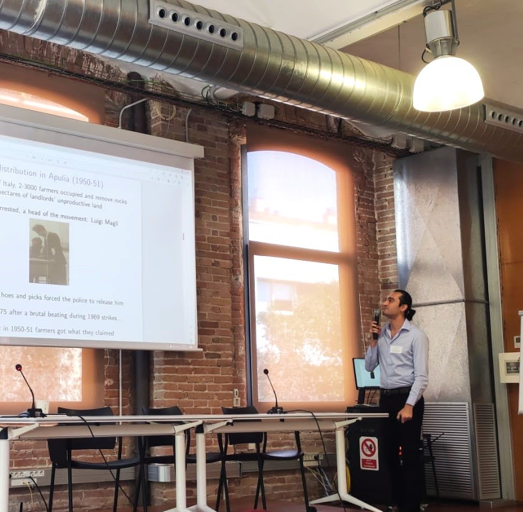

Publications

- Deteriorated Covid19 control due to delayed lockdown resulting from strategic interactions between Governments and oppositions
- Tired social distancing policies and epidemic control
- Coordination game vs prisoner’s dilemma in sustainability games: A critique of recent contributions and a discussion of policy implications
- The Tragedy of the Commons as a Prisoner’s Dilemma. Its relevance for sustainability games
Carrozzo Magli A., d’Onofrio A., Manfredi P. (2025), Forthcoming at Frontiers in Epidemiology, MedRxiv, 2020.05.26.20112946
Bilman, P.A., Carrozzo Magli A., D’Onofrio A., Manfredi P. (2022), Proc.R.Soc. A 478:20220175
Carrozzo Magli A., Manfredi P., (2022) Ecological Economics, 192, 107268
Carrozzo Magli A., Della Posta P., Manfredi P. (2021) Sustainability, 13(15), 8125